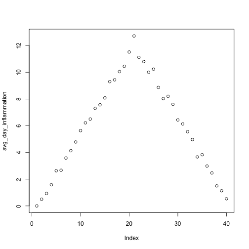
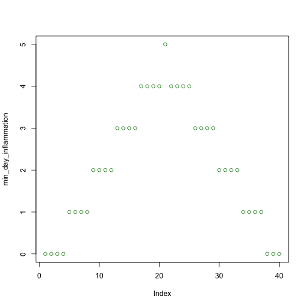
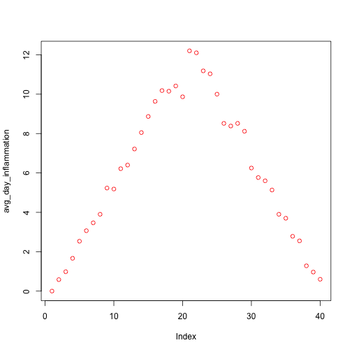

Analyzing Multiple Data Sets
Overview
Teaching: 30
Exercises: 0
Questions
Questions
- How can I do the same thing to multiple data sets?
- How do I write a
forloop?
Objectives
Objectives
- Explain what a
forloop does. - Correctly write
forloops to repeat simple calculations. - Trace changes to a loop variable as the loop runs.
- Trace changes to other variables as they are updated by a
forloop. - Use a function to get a list of filenames that match a simple pattern.
- Use a
forloop to process multiple files.
We have created a function called analyze that creates graphs of the minimum, average, and maximum daily inflammation rates for a single data set:
analyze <- function(filename) {
# Plots the average, min, and max inflammation over time.
# Input is character string of a csv file.
dat <- read.csv(file = filename, header = FALSE)
avg_day_inflammation <- apply(dat, 2, mean)
plot(avg_day_inflammation)
max_day_inflammation <- apply(dat, 2, max)
plot(max_day_inflammation)
min_day_inflammation <- apply(dat, 2, min)
plot(min_day_inflammation)
}
analyze("data/inflammation-01.csv")
We can use it to analyze other data sets one by one:
analyze("data/inflammation-02.csv")

but we have a dozen data sets right now and more on the way. We want to create plots for all our data sets with a single statement. To do that, we’ll have to teach the computer how to repeat things.
For Loops
Suppose we want to print each word in a sentence. One way is to use six print statements:
best_practice <- c("Let", "the", "computer", "do", "the", "work")
print_words <- function(sentence) {
print(sentence[1])
print(sentence[2])
print(sentence[3])
print(sentence[4])
print(sentence[5])
print(sentence[6])
}
print_words(best_practice)[1] "Let"
[1] "the"
[1] "computer"
[1] "do"
[1] "the"
[1] "work"but that’s a bad approach for two reasons:
It doesn’t scale: if we want to print the elements in a vector that’s hundreds long, we’d be better off just typing them in.
It’s fragile: if we give it a longer vector, it only prints part of the data, and if we give it a shorter input, it returns
NAvalues because we’re asking for elements that don’t exist!
best_practice[-6][1] "Let" "the" "computer" "do" "the" print_words(best_practice[-6])[1] "Let"
[1] "the"
[1] "computer"
[1] "do"
[1] "the"
[1] NANot Available
R has has a special variable, NA, for designating missing values that are Not Available in a data set. See ?NA and An Introduction to R for more details.
Here’s a better approach:
print_words <- function(sentence) {
for (word in sentence) {
print(word)
}
}
print_words(best_practice)[1] "Let"
[1] "the"
[1] "computer"
[1] "do"
[1] "the"
[1] "work"This is shorter - certainly shorter than something that prints every character in a hundred-letter string - and more robust as well:
print_words(best_practice[-6])[1] "Let"
[1] "the"
[1] "computer"
[1] "do"
[1] "the"The improved version of print_words uses a for loop to repeat an operation—in this case, printing—once for each thing in a collection. The general form of a loop is:
for (variable in collection) {
do things with variable
}We can name the loop variable anything we like (with a few restrictions, e.g. the name of the variable cannot start with a digit). in is part of the for syntax. Note that the condition (variable in collection) is enclosed in parentheses, and the body of the loop is enclosed in curly braces { }. For a single-line loop body, as here, the braces aren’t needed, but it is good practice to include them as we did.
Here’s another loop that repeatedly updates a variable:
len <- 0
vowels <- c("a", "e", "i", "o", "u")
for (v in vowels) {
len <- len + 1
}
# Number of vowels
len[1] 5It’s worth tracing the execution of this little program step by step. Since there are five elements in the vector vowels, the statement inside the loop will be executed five times. The first time around, len is zero (the value assigned to it on line 1) and v is "a". The statement adds 1 to the old value of len, producing 1, and updates len to refer to that new value. The next time around, v is "e" and len is 1, so len is updated to be 2. After three more updates, len is 5; since there is nothing left in the vector vowels for R to process, the loop finishes.
Note that a loop variable is just a variable that’s being used to record progress in a loop. It still exists after the loop is over, and we can re-use variables previously defined as loop variables as well:
letter <- "z"
for (letter in c("a", "b", "c")) {
print(letter)
}[1] "a"
[1] "b"
[1] "c"# after the loop, letter is
letter[1] "c"Note also that finding the length of a vector is such a common operation that R actually has a built-in function to do it called length:
length(vowels)[1] 5length is much faster than any R function we could write ourselves, and much easier to read than a two-line loop; it will also give us the length of many other things that we haven’t met yet, so we should always use it when we can (see this lesson to learn more about the different ways to store data in R.
Printing Numbers
R has a built-in function called seq that creates a list of numbers:
seq(3)[1] 1 2 3Using seq, write a function that prints the first N natural numbers, one per line:
print_N(3)[1] 1
[1] 2
[1] 3Solution
print_N <- function(N) {
nseq <- seq(N)
for (num in nseq) {
print(num)
}
}Summing Values
Write a function called total that calculates the sum of the values in a vector. (R has a built-in function called sum that does this for you. Please don’t use it for this exercise.)
ex_vec <- c(4, 8, 15, 16, 23, 42)
total(ex_vec)[1] 108Solution
total <- function(vec) {
# calculates the sum of the values in a vector
vec_sum <- 0
for (num in vec) {
vec_sum <- vec_sum + num
}
return(vec_sum)
}Exponentiation
Exponentiation is built into R:
2^4[1] 16Write a function called expo that uses a loop to calculate the same result.
expo(2, 4)[1] 16Solution
expo <- function(base, power) {
result <- 1
for (i in seq(power)) {
result <- result * base
}
return(result)
}Processing Multiple Files
We now have almost everything we need to process all our data files. The only thing that’s missing is a function that finds files whose names match a pattern. We do not need to write it ourselves because R already has a function to do this called list.files.
If we run the function without any arguments, list.files(), it returns every file in the current working directory. We can understand this result by reading the help file (?list.files). The first argument, path, is the path to the directory to be searched, and it has the default value of "." (recall from the lesson on the Unix Shell that "." is shorthand for the current working directory). The second argument, pattern, is the pattern being searched, and it has the default value of NULL. Since no pattern is specified to filter the files, all files are returned.
So to list all the csv files, we could run either of the following:
list.files(path = "data", pattern = "csv") [1] "car-speeds-cleaned.csv" "car-speeds.csv" "inflammation-01.csv"
[4] "inflammation-02.csv" "inflammation-03.csv" "inflammation-04.csv"
[7] "inflammation-05.csv" "inflammation-06.csv" "inflammation-07.csv"
[10] "inflammation-08.csv" "inflammation-09.csv" "inflammation-10.csv"
[13] "inflammation-11.csv" "inflammation-12.csv" "sample.csv"
[16] "small-01.csv" "small-02.csv" "small-03.csv" list.files(path = "data", pattern = "inflammation") [1] "inflammation-01.csv" "inflammation-02.csv" "inflammation-03.csv"
[4] "inflammation-04.csv" "inflammation-05.csv" "inflammation-06.csv"
[7] "inflammation-07.csv" "inflammation-08.csv" "inflammation-09.csv"
[10] "inflammation-10.csv" "inflammation-11.csv" "inflammation-12.csv"Organizing Larger Projects
For larger projects, it is recommended to organize separate parts of the analysis into multiple subdirectories, e.g. one subdirectory for the raw data, one for the code, and one for the results like figures. We have done that here to some extent, putting all of our data files into the subdirectory “data”. For more advice on this topic, you can read A quick guide to organizing computational biology projects by William Stafford Noble.
As these examples show, list.files result is a vector of strings, which means we can loop over it to do something with each filename in turn. In our case, the “something” we want is our analyze function.
Because we have put our data in a separate subdirectory, if we want to access these files using the output of list.files we also need to include the “path” portion of the file name. We can do that by using the argument full.names = TRUE.
list.files(path = "data", pattern = "csv", full.names = TRUE) [1] "data/car-speeds-cleaned.csv" "data/car-speeds.csv"
[3] "data/inflammation-01.csv" "data/inflammation-02.csv"
[5] "data/inflammation-03.csv" "data/inflammation-04.csv"
[7] "data/inflammation-05.csv" "data/inflammation-06.csv"
[9] "data/inflammation-07.csv" "data/inflammation-08.csv"
[11] "data/inflammation-09.csv" "data/inflammation-10.csv"
[13] "data/inflammation-11.csv" "data/inflammation-12.csv"
[15] "data/sample.csv" "data/small-01.csv"
[17] "data/small-02.csv" "data/small-03.csv" list.files(path = "data", pattern = "inflammation", full.names = TRUE) [1] "data/inflammation-01.csv" "data/inflammation-02.csv"
[3] "data/inflammation-03.csv" "data/inflammation-04.csv"
[5] "data/inflammation-05.csv" "data/inflammation-06.csv"
[7] "data/inflammation-07.csv" "data/inflammation-08.csv"
[9] "data/inflammation-09.csv" "data/inflammation-10.csv"
[11] "data/inflammation-11.csv" "data/inflammation-12.csv"Let’s test out running our analyze function by using it on the first three files in the vector returned by list.files:
filenames <- list.files(path = "data",
# Now follows a regular expression that matches:
pattern = "inflammation-[0-9]{2}.csv",
# | | the standard file extension of comma-separated values
# | the variable parts (two digits, each between 0 and 9)
# the static part of the filenames
full.names = TRUE)
filenames <- filenames[1:3]
for (f in filenames) {
print(f)
analyze(f)
}[1] "data/inflammation-01.csv"


[1] "data/inflammation-02.csv"
[1] "data/inflammation-03.csv"
Sure enough, the maxima of these data sets show exactly the same ramp as the first, and their minima show the same staircase structure.
Other Ways to Do It
In this lesson we saw how to use a simple for loop to repeat an operation. As you progress with R, you will learn that there are multiple ways to accomplish this. Sometimes the choice of one method over another is more a matter of personal style, but other times it can have consequences for the speed of your code. For instruction on best practices, see this supplementary lesson that demonstrates how to properly repeat operations in R.
Using Loops to Analyze Multiple Files
Write a function called analyze_all that takes a folder path and a filename pattern as its arguments and runs analyze for each file whose name matches the pattern.
Solution
analyze_all <- function(folder = "data", pattern) {
# Runs the function analyze for each file in the given folder
# that contains the given pattern.
filenames <- list.files(path = folder, pattern = pattern, full.names = TRUE)
for (f in filenames) {
analyze(f)
}
}{% include links.md %}
Keypoints
- Use
for (variable in collection)to process the elements of a collection one at a time. - The body of a
forloop is surrounded by curly braces ({}). - Use
length(thing)to determine the length of something that contains other values. - Use
list.files(path = "path", pattern = "pattern", full.names = TRUE)to create a list of files whose names match a pattern.